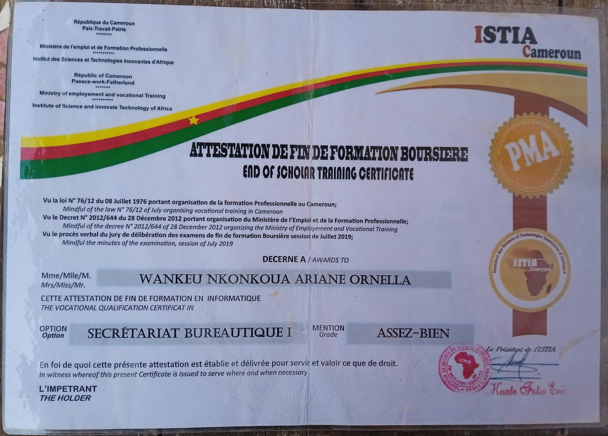

Moi cest WANKEU NKOMKOUA ARIANE ORNELLA etudiante en license 1 informatique a l’universite de Douala.Depuis quelques années déjà je fais des formations en secrétariat bureautique. J’étais sensé faire de secrétariat bureautique 1 à 6 mais malheureusement l’entreprise dans laquelle je me formais n’était pas très sérieuse, mais de là je suis sorti avec un diplôme.
J’ai appris le secrétariat bureautique durant 3 ans mais uniquement pendant les vacances. Apres ca j’ai fait une formation en Photoshop pendant 2 mois. J’ai fait un petit stage dans un secrétariat du quartier ou j’ai appris les photocopies, les photos minutes, l’imprimerie et les plastifications.
Je suis étudiante passionnée d’informatique curieuse et toujours motivée à apprendre de nouvelles choses. Depuis que j’ai découvert le monde du numérique, je me suis rapidement intéressée au génie logiciel, afin de concevoir des applications utiles et innovantes.
Mon objectif est de devenir ingénieure en logiciel, capable de concevoir, développé et améliorer des solutions technologiques adaptées aux besoins du monde actuel. J’ai également un fort attrait pour les langues étrangères. Je suis convaincue que parler plusieurs langues est un atout majeur pour collaborer avec des personnes de cultures différentes, voyager, découvrir de nouveaux environnements professionnels et personnels.
Ouverte d’esprit, persévérante et rigoureuse, je suis en constante recherche d’opportunités pour me former, m’améliorer et concrétiser mes projets. Mon portfolio vous présente un aperçu de mes réalisations, de mes compétences et de ma vision pour l’avenir.